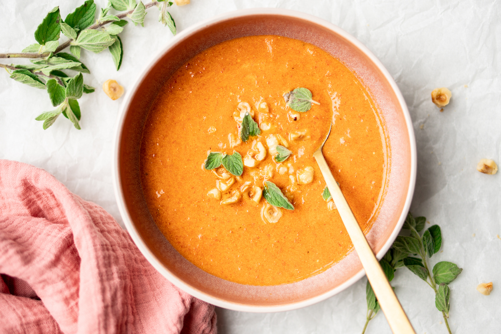

Paprika soup with mascarpone and oregano

Description
This is a recipe for a smoked paprika soup with mascarpone and oregano.
Ingredients:
- Red paprika
- Roasted paprika in a jar
- Onion
- Paprika powder
- Vegetable stock
- Mascarpone
- Oregano
- Olive oil
- Salt
Recipe:
- Soften onion in the pan.
- Add paprika powder and heat until aromatic.
- Add fresh paprika, roasted paprika and the vegetable stock.
- Cook for 20 minutes until vegetables are soft.
- Blend the soup with the mascarpone
- Present the soup with some fresh oregano and olive oil.